User research methods to identify opportunities and design solutions for a new venture project.
USOC
User & Market Research Case Study
USOC
(u-sock)
A unified platform for common student needs including renting/subletting, carpooling, tutoring, and other group activities.
YEAR
July 2018 (1 month)
ROLE
Ideation, research, strategy
TEAM
Vivian Liu, Dijhon Sage Tulloch, Hantao Lu, Patrick Ng, Sherry Guo, Cathy Huang
Part 01: Overview
Problem
Solution
My Role
Part 02: Research & Analysis
Opportunity Validation
Competitive Analysis
Industry Challenges
Part 03: Target Market
Market Size
User Interviews
Insights
User Persona
User Journey Map
Mobile vs. Web
Reflections
Overview.
/01
Problem
The woes of online buy & sell groups.
The local housing rental group in Waterloo, textbook exchange group, and rideshare group contains over 70 000, 10 000 and 40,000 students each, respectively. Students must rely on their due diligence to avoid scams, and there isn’t a proper system to hold scammers accountable. With all the pressure of moving away from home, adapting to post-secondary life, and paying for tuition, many students cannot afford to be scammed of their money or time.
This issue prompted the question - how can we create a trustworthy and safe space for vulnerable students?
/02
Solution
An app for students, by students.
We found that a common issue with student-led groups on platforms like Facebook, Whatsapp, or Wechat, was a lack of verification. If users can be verified before they are allowed on the platform, we would be able to limit the number of fake/scam accounts created. For example, a student ID issued from the university is much more difficult to forge than a fake email address.
With proper verification, we can create a safe social platform for all students in the university community.
/03
My Role
New Venture Project.
In a team of six students, we designed a new venture project for a final first-year business project and case competition. We were tasked with creating a compelling and detailed research report illustrating how our new venture idea is financially viable, captures an untapped opportunity in the market, and creates value for customers.
After finishing the deliverables including a final report and demonstratives, I put together this presentation to showcase our work in the ideation process, market research, and user research. In addition to contributing to the research, interviews, and analysis, I created new graphics from the data on our report for a more visual presentation.
Research and Analysis.
/01
Opportunity Validation
USOC’s competitive advantage stems on improving the shortcomings of existing platforms to meet the needs of an underrepresented target audience.
We started with an idea to help University of Waterloo students manage their post-secondary finances. In particular, international students experience a lot of difficulty finding affordable sublets, textbooks, and rideshares as they transition into a new society.
Student-only user base
The Canadian Bureau for International Education reported in 2017 a total of 494,525 international students, a 20% increase since 2016 and 10% more than their projected goal of 450,000 students by 2022. Ontario universities are the most popular of all the provinces by a large margin.
Our focus will begin with the Kitchener Waterloo region, home to the University of Waterloo and Wilfrid Laurier University. Over 106,528 students live and study here, with more enrolling every year. With both a strong co-op program and multiple satellite campuses, students find themselves often travelling from different cities and moving homes.
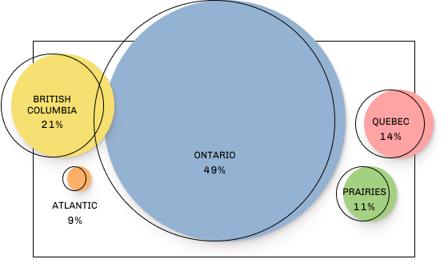
International study permit holders by province in 2016
Co-op Program
Most students only stay on-campus for 2 semesters, then will either return home, continue studies, or find an internship; they tend to move and travel often as a result.
Community Oriented
Research shows most students seek support from their peers to help them navigate their post-secondary career. This includes finding sublets from other students, rideshares, and buying used.
Saving Money
Students are thrifty and will find canny ways to save money wherever possible. Many have lower disposable income and are willing to sacrifice some quality of life.

Weighted avgerage cost for an undergrad student living off-campus at a Canadian university
Cost of student living
We were surprised to find that students on average were spending more money on rent than tuition. In 2016, the average cost of post-secondary education for a student in Canada is $19,498.75, and almost 50% is spent on rent, textbooks, and transportation. In Waterloo, one bedroom can cost upwards of $800 a month, or $9,600 a year. Living in residence is more expensive, up to $12,000 a year + meal plan prices.
Textbooks will cost students on average $800 a year if bought brand new, hence many choose to buy them second hand. A new book worth $100 can be found in textbook exchange groups for up to 60% off.
There is also a growing need for public transportation and ridesharing. The number of young drivers in Canada is declining; 16.4% fewer driver license holders in the 20-24 year-old range in 2014 than 1983, and 11% fewer in the 25-29 range (Beck,2016). A ticket from Waterloo to Ottawa by bus or train costs over $100, while a rideshare would require no transfers and cost around $40-50.
/02
Competitive Analysis
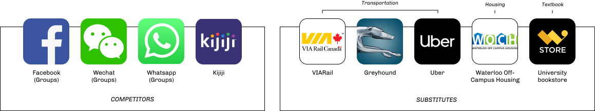Competing Products
From an analysis comparing these competitors, we found that:
1. Competitors
- Platforms for students to create community-moderated groups for common needs such as renting, buying/selling, and organizing group activities or events.
- Established communities, top of mind for many students.
- No way of holding members accountable, no way of checking if new accounts are legitimate.
- Difficult for new or international students to find these groups.
2. Substitutes
- B2C, safer options but are generally more costly.
- Most lease agreements require students to find their own groups for a shared apartment.
- Leases are yearly and do not accommodate for co-op students who move away for internships every 4 or 8 months.
- Rental companies in the area have extremely poor reviews (1-2 stars average) from bad management experience to poor customer relations.
Our app would provide a centralized platform for all student-to-student transactions involving rentals, sublets, rideshare, and textbook exchange. Students are currently using unverified buy and sell groups through Facebook, Wechat, Kijiji, etc. which can often lead to frustrations and scams. None of these platforms are designed specifically for students.
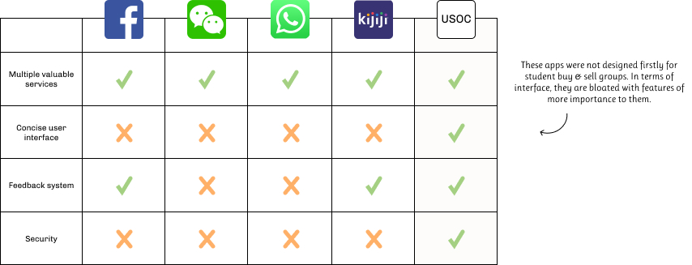Competitor analysis
/03
Industry Challenges
Power of rival products
Competitors like Facebook and substitute B2C options will have high brand loyalty as they’ve been around for a long time. Groups on Facebook, for example, already have tens of thousands of members and benefits from the resulting network effect. To combat this we plan to emphasize our multifunctionality and the security of an extra layer of authentication. A free platform will be important as most competitors use similar revenue models and fees would add more switching costs.
Additionally, it helps that new students are enrolling every year. These students will have yet to commit to a group or platform, and may be more open to trying a new app.
Technology barriers
One of our key values is accessibility, meaning we need to design our app such that it works across all platforms, devices, and can accommodate for any disabilities. We want the experience to be seamless and easy to learn. We will need to also launch a web version for students who don’t have a smartphone.
Target Market.
/01
Market Size
USOC will first launch in the Kitchener Waterloo region. We want to accommodate for all students so that anyone can benefit from our services.
Waterloo & Laurier Students
Looking at the size of the Kitchener Waterloo region to see if we have a viable market to launch our app, we fount that:
In Fall 2017 (Sept - Dec), there were:
- 25,428 full-time Canadian and 7,284 full-time international students enrolled at the University of Waterloo
- 52% of Canadian and 35% of international students are enrolled in a co-op program
- Additional 6,386 co-op students on a work term from the University of Waterloo
- 15,142 full-time Canadian and 977 full-time international students enrolled at Wilfred Laurier University
In total, there were 55,217 students, of which 17% were international.

Estimated market size for USOC
/02
User Interviews
We interviewed 51 students from our class, friend groups, and randomly online who attend university in the Kitchener Waterloo region. We found that:
- Finding a lease or sublet is often a stressful experience because you need to be wary of who you are sending money to.
- Several international students said they were not be familiar with customs of the local buy and sell scene.
- 86.2% of responses also stated they would be open to using a new app if it was free and made the process easier.
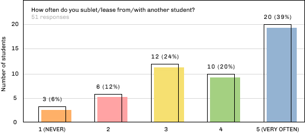
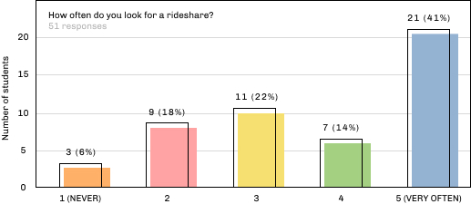
Of the students we interviewed, we found a majority of them will first check buy and sell groups on social media for rentals.
I also helped run a simple affinity mapping to visualize their goals, behaviours, and trends. We used our findings to define the scope of our design and key problems we wanted to fix for our users.
“Describe any difficulties you encountered as you adapted to post-secondary.”
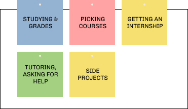
Education
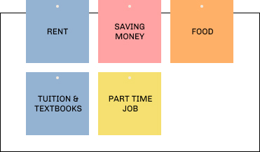
Financial Choices
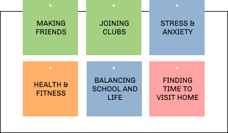
Mental Wellness
/03
Insights
Our findings motivated us to realign our strategy to address topics in education, financial, and mental wellness, the three main categories where students face difficulties in their post-secondary career. We went through several ideas and their feasibility to implement, and decided on the following core features:
Course Planner
Create a custom course plan that automatically tracks prerequisites, availability, and course-load. Users can pick a major and track their progress to graduation (i.e. credits, course suggestions).
Verification
Students must verify their account using a valid student ID before they can make transactions or interact with other users.
Rentals & Sublets
Provide an easy way for users to list and search for leases or subleases. Filter by bedrooms, semester, location, and price. Verified rental businesses can create a special account to list their ads.
Textbook Exchange
A platform for students to buy & sell second-hand textbooks. Users who have selected their courses on the app can view the specific textbooks they will need.
Rideshare
Look for available carpools, set a custom start and end city, and filter by specific dates. We also hope to offer users exclusive deals for bus or train tickets.
Student Life
Find nearby events, clubs, and free food, join community/class groups. Option to automatically receive recommendation based on interests, location, and friends. Refer a friend for extra perks.
/04
User Persona


We used these personas to help visualize areas of need, motivation, and frustration from our users. Next we made journey maps for a student going to university to pinpoint difficult touch points that we can address in our app.
/05
User Journey Map
We sorted our user research into categories based on task and similarities, and then I created the following journey maps to help us target the specific areas where our app should focus on to best alleviate pain points.
Every four months, students find themselves preparing for the next term. They must make arrangements for housing, course selection, and course materials.
During the term, they will likely encounter situations involving student life, academics, and travel.
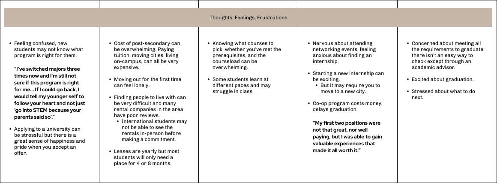
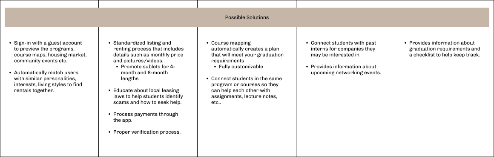
Simplifying the course selection & planning process
We researched the current journey to complete different tasks we want to target and found that the most unnecessary and complex involved selecting and planning courses. When we asked different students how they go about this, most of them will ask their academic advisors for help instead of trying to navigate the process themselves.
We created the following user flow from their responses and our personal experience as students. Then we used this to visualize what the journey would look like on our app if we implemented an automated feature to simplify the process.
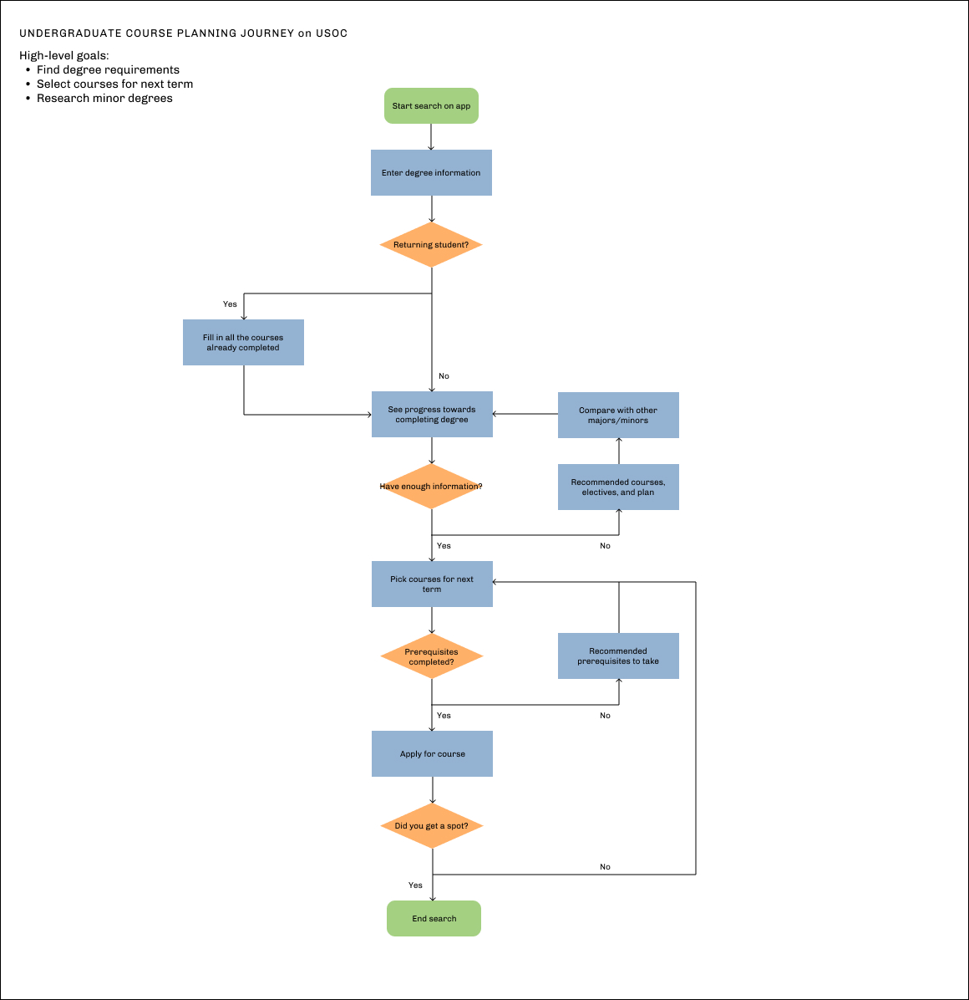
We understand that university and the path to graduation is different for each student and far from a linear journey. “Life” can often get in the way which is why we want to create a helpful, dependable companion to account for any challenges.
In terms of marketing, we want to focus the majority of our efforts promoting to students in first-year or younger who are just getting into the university journey, before they settle into alternative methods to fulfill their needs.
- The university student body is essentially replenished every four years as students rotate in and out. Our top priority is to make USOC top-of-mind for all students in the region as the go-to solution for course planning, subletting, carpooling, and textbooks.
- We found that students resonate the best with convenience and deals. We plan to revolve our marketing efforts around an exclusive student deal section for our users in collaboration with local vendors to bring traffic to our platform.
Technology Factors.
/01
Mobile vs. Web
Two main channels to access information
Students are always moving, usually bringing with them a digital device to conduct research or take notes. The ability to find relevant information on the go is very important, which is why we need to focus on both web and mobile accessibility.
Students tend to spend more time on their smartphone than any other device so an application would be an easy method of offering our service. In Canada, mobile app usage has grown by over 70% in 2016, and the number of global smartphone users is projected to increase from 2.1 billion in 2016 to 2.5 billion in 2019.
Mobile apps are a great channel for students as almost every student has a mobile phone. Whether it is passing the time, listening to music, or staying organized, mobile apps play a huge part of day-to-day life of students. The app industry faces relatively fewer barriers to entry and a freemium business model allows students to use most of our services at no cost. We want to offer both our mobile and desktop platforms for free, while generating revenue from commissions for rentals and advertisements.
Reflections.
Future plans for USOC
The continuous growth of the student body offers a sustainable target market for USOC to grow and profit. Our priority is targeting new students, establishing top-of-mind, and building a strong user base.
Once we have enough leverage, we plan on approaching the three biggest housing companies in the region, Accommod8u, Abode Inc and KW Rent to discuss a mutually beneficial deal. Currently they are viewed extremely poorly in terms of management and service in the eyes of students but continue to dominate the market because of a lack of alternative options. We hope to one day act as an intermediary for students to alleviate some of their stresses and frustrations working with these companies.
Get in Touch.

Toronto, Canada
Designed by me with coffee and ♥. Under construction. © 2022